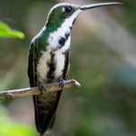
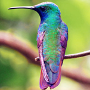
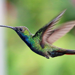

Mango Gorjinegro
Anthracothorax nigricollis
Orden: Apodiformes
Familia: Trochilidae
Ampliamente distribuido pero poco común, este es un colibrí bastante grande y oscuro con un pico ligeramente curvado. El macho es mayormente verde con negro que se extiende por toda la garganta y el vientre. Las hembras tienen las partes inferiores blancas con un línea oscura sobre el centro.



